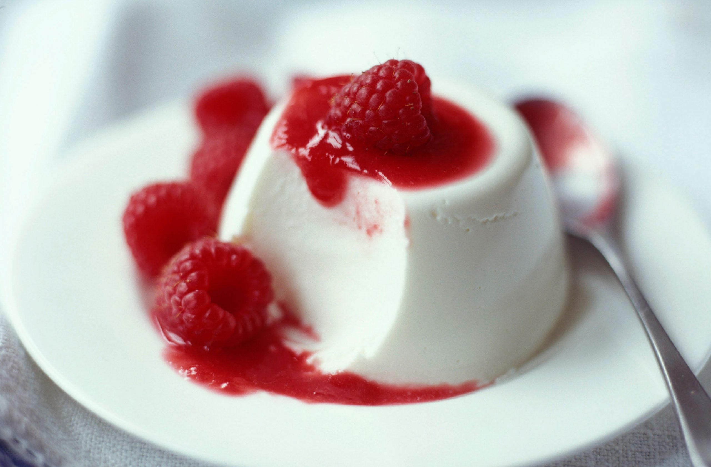

Panna Cota

Panna Cota
A traditional, easy, and delicious Italian custard.
I had a difficult time finding a good and easy recipe on
the internet, so I made up my own recipe.
It tastes just like the panna cotta served at Italian
restaurants.
Serve with warm hot fudge sauce and fresh
raspberries on top. This keeps well for several days in
the refrigerator
Ingredients
- ⅓ cup skim milk
- 1 (.25 ounce) envelope unflavored gelatin
- 2 ½ cups heavy cream
- ½ cup white sugar
- 1 ½ teaspoons vanilla extract
Directions
- Pour milk into a small bowl, and stir in the gelatin powder.
Set aside.
- In a saucepan, stir together the heavy cream and sugar,
and set over medium heat. Bring to a full boil, watching carefully,
as the cream will quickly rise to the top of the pan.
Pour the gelatin and milk into the cream, stirring until
completely dissolved. Cook for one minute, stirring constantly.
Remove from heat, stir in the vanilla and pour into six individual
ramekin dishes.
- Cool the ramekins uncovered at room temperature. When cool, cover
with plastic wrap, and refrigerate for at least 4 hours,
but preferably overnight before serving.
Nutritional Facts
418 calories; protein 3.5g; carbohydrates 20.2g; fat 36.7g; cholesterol 136.1mg; sodium 45.8mg.